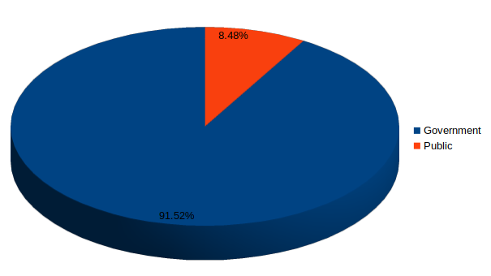
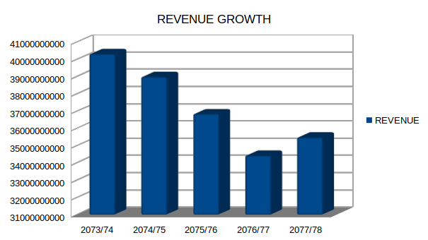

Nepal Telecom Stock Analysis
A high level overview of Nepal Biggest Telecommunication Company, NTC.
By Prajwal Basnet | Sep 2 2022 | 10 minute read

Introduction
Nepal Telecom a.k.a Ntc is telecommunication company established in 2004 which provides services like voice communication,internet service and recently started its I.T services from subsidiary company Nepal Digital payment company. The main objective of this company is to provide telecommunication services throughout the country at a cheapest price and it has succeeded till now. NTC has almost moved from cdma to G.S.M(voice service) which is positive and currently the company is focusing on data services. It has been providing services to all 77 district throughout Nepal with 720 + 4G/LTE service and they are currently working for this project. However,There is gradual decrease in International Roaming services due to ott services like whatsapp,viber etc. so they are planning to trade off with other services like Data service,Value added service(service beyond voice call).The company major objective on upcoming years is to increase the customer on FTTH(Fibre to the home) service at cheap price.
Ownership
Shareoutstanding: 180,000,000.00
Government: 164,736,000
Public: 15,264,000
Moat
- Biggest telecommunication company in Nepal.
- Higher Profit margin.
Company Service Growth
(As per voice service)
| Services | 2073/74 | 2074/75 | 2075/76 | 2076/77 | 2077/78 | C.A.G.R |
|---|---|---|---|---|---|---|
| Telephone | 6,81,418 | 6,86,762 | 6,77,128 | 6,64,342 | 5,63,465 | -3.73% |
| G.S.M | 1,53,18,147 | 1,75,86,214 | 2,02,38,637 | 1,74,80,964 | 1,99,71,086 | 5.45% |
| CDMA | 16,02,045 | 17,06,963 | 17,79,902 | 18,02,221 | 4,38,492 | -22.83% |
| FTTH | 592 | 592 | 592 | 38,680 | 1,27,223 | 192.72% |
(As per data service)
| Services | 2073/74 | 2074/75 | 2075/76 | 2076/77 | 2077/78 | C.A.G.R |
|---|---|---|---|---|---|---|
| G.S.M | 80,85,776 | 1,05,22,138 | 1,33,39,639 | 1,46,88,539 | 1,99,71,086 | 19.82% |
| ADSL | 1,81,582 | 2,06,217 | 2,13,348 | 1,93,967 | 1,49,352 | -3.83% |
| CDMA | 1,36,573 | 1,36,576 | 1,36,576 | 1,36,576 | 1,36,576 | 0% |
| FTTH | 498 | 670 | 4,828 | 37,138 | 1,22,110 | 200.54% |
From the above figures, the company's core business is increasing at a good rate. Customers from services like telephone,cdma,adsl etc is expected to decrease because of better technologies. Similarly, The figure for voice services customers has increased by 7.7 % from 2077 with 2 core 11 lakh customer and for the data service the figure increased by 35% approx with 2 core 4 lakh customers. subsequently, The market share for data service and voice service is 53.72 % and 53.06% respectively as of 2077/78. However,There is gradual decrease in International Roaming services due to ott services like whatsapp, viber etc. Looking at it's only competitor NCELL which is the subsidiary of AXIATA group with 20% local investment is providing better data services,good data packages and other services compare to NTC and been a serious threat to this company. Nevertheless, Due to the ownership of government and the size of this company, it has big advantage.
Revenue
The major source of revenue of the company comes from voice(G.S.M), data(G.S.M), fixed line and sms service.
The following reasons revenue of company has been declining:
- Change in Tax Rate:From 2075 the company has to pay an additional 13% tax for telecommunication service charge.
- Change in recharge card business model(major decline):Company used to give commission per sale on recharge card however,due to new rules they have to give discounts which has hampered g.s.m revenue.
- Competition: Due to the increase in competition, Company have to reduce tariffs which is hampering the revenue of the company.
- Ott services:Due to the online services like whatsapp , facebook, viber etc the revenue from international service has been declining and expected to decrease in future.
The company is well aware of the reason for the decrease in revenue so they are planning to trade off with value added service namely, ftth(fibre to the home) service. Unfortunately, they have not attracted much coustomer due to high competition on the ISP(Internet Service Provider) market.
Valuation
Its very hard to go bankrupt if you don't have any debt ~ peter lynch
LTP as of 2022-09-02: Rs 900
Ordinary Share Outstanding: 180,000,000.00
Net Worth Per Share: 528.13
PE: 19.59
Last 5 years average q4 eps: Rs 75.872
Price to Book Value: 1.73
ROE 5.73
ROA 3.51
operating profit margin: 33%
Return on Shareholder Investment: 47%
These figures illustrate the company's current financial condition in a broad range.
(Figures are in 000)
| Year | Paidup Capital | Net Income | Owners Earning | Book Value/ Share | Eps | Owners Earning/Share |
|---|---|---|---|---|---|---|
| 2073/74 | 150,000 | 15,372,764 | 11,976,386 | 608 | 102 | 79 |
| 2074/75 | 150,000 | 17,483,801 | 14,889,822 | 664 | 116 | 99 |
| 2075/76 | 150,000 | 9,757,575 | 12,916,076 | 621 | 61 | 86 |
| 2076/77 | 150,000 | 9,748,955 | 12,916,076 | 678 | 68 | 122 |
| 2077/78 | 180,000 | 7,127,740 | 5,632,672 | 644 | 47 | 31 |
Although the core business of Ntc has been increasing at good rate, the profit is declining due to the reasons I have explained in the revenue Section. The paid up capital has remain the same for 5 years and recently as the company cannot earn expected profits in 2077/78 the company has decided to give bonus share by 20 percent. The net income has decreased by 53 percent in five years period. In contrast, As a nature of telecommunication business ,which requires heavy investment, the book value has remain at the same level over the period. Eps has been declined by more than 50 percent. The owner earning is the warren buffet approach of calculating the real earning earned by the business owner by subtracting the capital expenditure. Overall, The figures for owner earning has declined by 60 percent. In 2075/76, new rule is implemented to give discount instead of commission which has hampered company revenue significantly. Also, the company has renewed their license at the same time which increased their owner earning. Despite all of this, the core business of this company is very profitable with more than 30 percent operating profit margin which indicates that this company has huge competitive advantage. The only thing that is stoping this company from reaching its full potential is not utilizing its capital properly.
Market Capitalization
The market capitalization shows the cost to buy the whole company at current LTP(warren buffet approach of thinking as buying whole company even if buying small number of shares). The company has gave bonus for the very first time in 2077/78 by 20 percent which increased shareoutstandingfrom 150,000,000 to 180,000,000. We can buy the whole company at 154.8(1 kharab 54 arba 80 core) billion Rupees which might seem intimidating at first but the main treasure of Ntc is hidden in its Reserve and surplus which is at Rs 74 billion 680 million Rupees and it has deposit and investment of debenture and loan worth of Rs 40 billion and 13 billion respectively.
Warren Buffet 10X Pre Tax
Warren Buffet has historically paid 10X pre tax earnings for many of his famous investments which includes Coca-cola,American Express, Wells Fargo, Walmart ,and apple. The results of all of these investments have turned out to be astonishing, so there must be something fundamental to it given how many times he had success with it , and how many times he mentioned it.
Warren Buffet thinks of buying stocks as a bond and considers bond as a share price and bond yield as a pre tax earning(not the dividend) instead of bond yield being fixed pre tax earning of the company keeps increasing or decreasing year over year. so, with the rise of company earnings comes a corresponding increase in the market. However,this rule of buffet also faces many risks like valuation,growth,quality of business etc. Thus, I don't think 10x pretax earnings for a stock is a bad if it's a high quality business that can grow over time but you still have to answer the question how much growth there will be and how much a shareholder can expect to get back.
- Pre tax income=Rs 10,946,367,788
- Share outstanding= 180,000,000
- Ltp=Rs 900
- Pre tax per share= Rs 60.81
- Pre tax interest rate=60.81/900 = 6.75%
I think there are good odds that it can grow its profits, by a healthy 4~9% per year, due to its strong moat, strong cash generation capability, and strategic initiative to both grow and diversify income streams. Thus, Ntc is giving you 6.75 percent interest on 900 rupees which can increase by 4~9 percent over year.
Graham Number
Graham number is a traditional approach of representing fair valuation by value investor which sets the upper price limits paid by defensive investors. The formula of Graham number is √ 15 X 1.5 X E.P.S X BookValue
Where,
Pe ratio=15(maximum)
Book value per share=1.5( maximum)
And by using this formula, Graham value of Ntc is Rs 680.87.
In my words, the Graham number is the maximum price with lowest downside risk. Up to this price I won't hesitate to concentrate significantly portion of my portfolio on this company after properly analysing. Although this formula has been very useful to value investors, It does leave out many fundamental characteristics like competition,major stakeholders,industry characteristics etc. So, relying solely on this formula is not a good idea.
Intrinsic value based on Discounted cash flow
The free cash flow of this company is very low compared to the market capitalization so the intrinsic value will be very less which is not true for this company because of its large property and investments so investors might miss the chance of buying this company. As charlie munger says vaguely rights beats precisely wrong so betting based on intrinsic value for this company can be big mistake. Accordingly, the valuation will be different according to different analyst so for me projection on future plays only minor role. As a result, i have decided to not include Discounted cash flow calculation for this company.
Dividends & PE history
| Year | 2073/74 | 2074/75 | 2075/76 | 2076/77 | 2077/78 |
|---|---|---|---|---|---|
| Cash | 55% | 55% | 45% | 40% | 20% |
| Bonus | 0% | 0% | 0% | 0% | 20% |
| Total | 55% | 55% | 45% | 40% | 40% |
| PE | 6.74 | 6.90 | 10.18 | 11.22 | 26.44 |
The dividend of this company has been very satisfactory to the investors compared to other companies. The historical PE ratio illustrates that the investor expectation on this company is not optimistic until 2077/78 which I believe due to the bull run on the overall market.
Past Investment returns on NTC
Ntc has provided satisfactory dividends to its investors. Due to overall market crash the company has lost around 34 percent in a year 2078/79.Considering the investment of Rs 1 lakh 5 years ago at @600 , Ntc shareholders will have compounded their money by 15.64 percent in 5 years period excluding tax compared to 1.4 percent of overall market.
- Initial Investment=Rs 1,00,000
- Initial share price=Rs 600
- Total bought stock=166
- Total cash Divided after 5 years= Rs 35,690
- Current Selling price=Rs 860
- Total share after including bonus=199
Capital gains=(199 X 860) - 1,00,000=Rs 79,100
Total gain=capital gains + total cash divided=Rs 79,100+ 35,690 =Rs 1,14,790
Board of Directors and Management of NTC
There are total 8 directors in NTC:
Mr. Baikuntha Aryal
Mr. Baikuntha Aryal is ecomoist by education who has completed his PHD studies from Norwegian University of Life Sciences. He has served government for more than 20 years in various government agencies including the Ministry of Finance, the Ministry of Commerce, the Office of the Prime Minister, and the Council of Ministers. By looking at his social medias and blogs he has shown concern regarding environment pollutions. I have not found any kind of criminal activities or any kind of negative news which affects him. He has stressed making timely reforms in the Digital Nepal Framework, cyber security, expanding the broadband internet service and the information highway, and on the effective implementation of the digital signature.
I have listed other directors of Ntc below:
- Mr. Sunil Paudel(Managing Director)
- Mr. Bhupal Baral(Joint Secretary,Ministry of Finance)
- Mr. Uttar Kumar Khatri(Joint Secretary,Ministry of Communication and Information Technology)
- Mr. Phanindra Gautam(Joint Secretary, Ministry of Law, Justice & Parliamentary Affairs)
- Mr. Ambika Prasad Paudel(Public Shareholder Representative)
- Mr. Rajendra Aryal(Company Secretary)
My Final thoughts on Management and Bod of Ntc
Overall, Ntc management and Bod team seems capable to handle the business in terms of their experience and degree. However, It seems like some members of Ntc teams are heavily influenced by politics due to government stake. From my general observation and review from the Internet, I found that Ntc staffs(government workers) are not effective as per their competitors Ncell. Thus,we can expect this company will continue to provide slow services to its customer.
Conclusion and Final Thought
This report analyzes Ntc as a industry leader in the telecommunication industry which is trading at a favourable price. The results show that NTC presents excellent prospects for offering double-digit returns in the long term with a wide margin of safety. Under its current valuation, we do not need it to win for our investment to generate a handsome return. As long as it does not lose an investment here,thus,it is similar to owning a bond with a 6.75% yield even if its profits stagnate forever. Furthermore, The ftth service,good data service and the diversification of company in good business is going to play a major role in future if the company is to grow quickly.